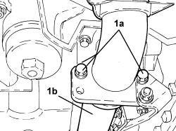
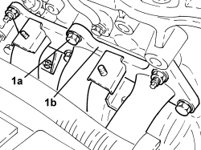

1072C30 LEFT EXHAUST MANIFOLD - R + R AND REPLACE GASKET
- Path
- Procedures > 10 ENGINE > 1072 INLET AND EXHAUST MANIFOLDS > 1072C EXHAUST MANIFOLDS > 1072C30 LEFT EXHAUST MANIFOLD - R + R AND REPLACE GASKET
- Kind
- repair procedure (removal / refitting; the operation number is the code)
- Applies to
- engines: 3.2 JTS; all production periods
- Interactive page
- https://sloeber94.github.io/elrnDB/#/939005277
Applies to: engines: 3.2 JTS; all production periods
 Removing
Removing
 Refitting
RefittingOp. 1080B92 LEFT UPPER LAMBDA SENSOR - R.R.
Op. 1072C40 LEFT EXHAUST MANIFOLD HEAT SHIELD - R.R.
Op. 1084A16 OIL DIPSTICK PIPE - R.R
1. Undo the bolts (1a) fixing the exhaust pipe (1b) to the catalytic pre-converter for the left head.

Applies to: engines: 3.2 JTS; all production periods
1. Undo the fastenings (1a) and remove the exhaust manifold (1b) with integrated pre-catalyzzer.
- Remove the exhaust manifold gasket.

Applies to: engines: 3.2 JTS; all production periods
Refitting
Removing- Place a new gasket back in position.
- Place the exhaust manifold with integrated pre-catalyzer in position and tighten the fastenings to the recommended torque.
Component | Fastening | dia | Value (daNm) | Validity |
|---|---|---|---|---|
Exhaust manifold-catalytic preconverter to cylinder head | Bolt | M8 | 2.2 ÷ 2.6 | 3.2 JTS |
Component | Fastening | dia | Value (daNm) | Validity |
|---|---|---|---|---|
Exhaust manifold-catalytic preconverter to cylinder head | Nut | M8 | 2.2 ÷ 2.6 | 3.2 JTS |
- Tighten the bolts fixing the exhaust pipe to the catalytic pre-converter for the left head.
Op. 1084A16 OIL DIPSTICK PIPE - R.R
Topics linked from this page (3)
- 1072C40 LEFT EXHAUST MANIFOLD HEAT SHIELD - R.R.
- 1080B92 LEFT UPPER LAMBDA SENSOR - R.R.
- 1084A16 OIL DIPSTICK PIPE - R.R